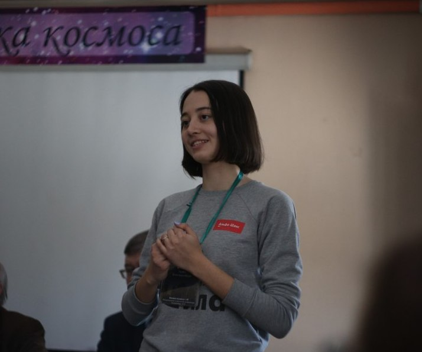

Hey! I'm Olga, a PhD student in Astronomy at Harvard University
My research interests lie in Galactic and Extragalactic Astronomy.
Currently, I am starting a new project on the simulation of the interaction between active galactic nuclei (AGN) jet and interstellar medium (ISM) to study galaxy quenching.
PUBLICATIONS
1st author papers
1. Borodina et al., Unresolved Multiples and Galactic Clusters’ Mass Estimates, ApJ, 908, 60, 2021
2. Borodina O.I., Kovaleva D.A., Unresolved Binaries in Open Clusters, INASAN SR, 5, 351, 2020
3. Borodina et al., Unresolved Binaries and Galactic Clusters’ Mass Estimates, ApJ, 874, 127, 2019
co-author papers
4. Shukirgaliyev, B.;[and 14 others, including Borodina O. ], The bound mass of Dehnen models with centrally peaked star formation efficiency, A&A, 654, A53, 2021
5. Polyachenko, E. V.; Shukhman, I. G.; Borodina, O. I., Damped perturbations in stellar systems: Genuine modes and Landau-damped waves, MNRAS, 503, 660, 2021
presentations
1. Astroseminar (SPbGU, St. Petersburg, Russia), "On the Tremaine-Weinberg method: how much can we trust gas tracers to measure pattern speeds?" (invited online talk, Sep 2022)
2. Galaxy Coffee (MPIA, Heidelberg), "On the Tremaine-Weinberg method: how much can we trust gas tracers to measure pattern speeds?" (talk, Jul 2022)
3. EAS2022 (Valencia, Spain), "On the Tremaine-Weinberg method: how much can we trust gas tracers to measure pattern speeds?" (poster, Jun 2022)
4. Conference "Astronomy and Space Research" (UrFU, Russia), "On the density distribution of bound clusters after residual star-forming gas expulsion: Zhao profiles" (talk & 3rd place award, Jan 2022)
5. Astrophysical Seminar (INASAN, Russia), "The bound mass of Dehnen models with centrally peaked star formation efficiency" (talk, Dec 2021)
6. Volkswagen Trilateral Project Workshop (ARI/ZAH, INASAN, MAO, NAOC), "On the density distribution of bound clusters after residual star-forming gas expulsion: Zhao profiles" (talk, Aug 2021)
ABOUT ME
Olga, Olya, Olishna, Olechka, Olen'ka, Os'ka, Ol'ka, Lola, Ol, O
I started my undergraduate studies at the Ural Federal University in Ekaterinburg (Russia) and then transferred to the Moscow Institute of Physics and Technology, where I earned my Bachelor's and Master's Degrees. Living in Moscow, I also worked at the Institute of Astronomy, the Russian Academy of Sciences.
During the summer of 2021, I had an internship at Max Planck Insititute for Astronomy working with the PHANGS collaboration. I came back as a visiting student for 6 months in 2022.

I just started my Ph.D. at Harvard University (Center for Astrophysics | Harvard & Smithsonian) in September 2022 working with Prof. Lars Hernquist.
you can find more information in my CV or on social media Instagram
CONTACT
I am more than happy to help, answer your questions and just chat about the weather today.
| My office: | A-102, Center for Astrophysics | Harvard & Smithsonian, 60 Garden Street Cambridge, MA 02138, USA |
| My e-mail: | olga.borodina@cfa.harvard.edu |
| My telegram: | @olaboro |
| My blog (RU): | telegram.me |